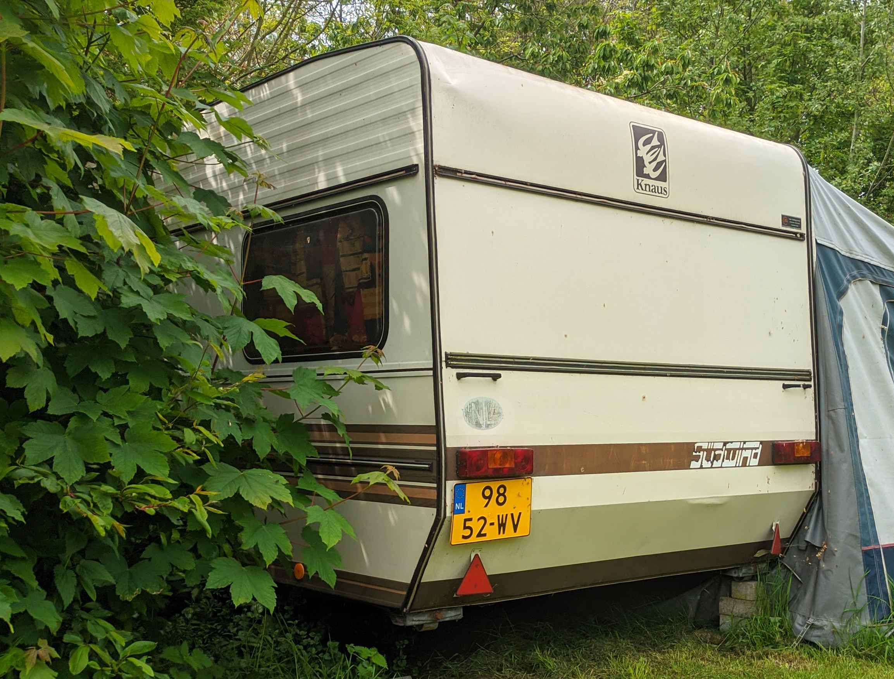
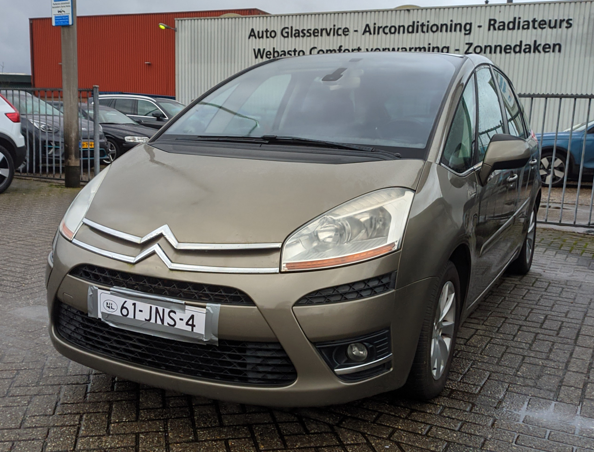

License Plates of
The Netherlands (NL)
Photographed in The Netherlands


Sidecode 5. B = Commercial Vehicle over 3500kg.


Sidecode 4. B or V = Commercial Vehicle.


Sidecode 2. W = Small Trailer over 750kg.

Sidecode 2. W = Small Trailer over 750kg.


Sidecode 11. F or D = Scooters and Mopeds. Yellow plate = Max speed 45km/h.


Sidecode 11. F or D = Mopeds. Blue plate = Max speed 25km/h.


Sidecode 12. T = Agricultural Vehicle.


Sidecode 11. L = Agricultural Trailers.


Sidecode 8. White plates are used as repeater plates. Or for export on cars.

Sidecode 7. White plates are used as repeater plates. Or for export on cars. The oval is only used on cars.


Sidecode 6. White plates are used as repeater plates. Or for export on cars.